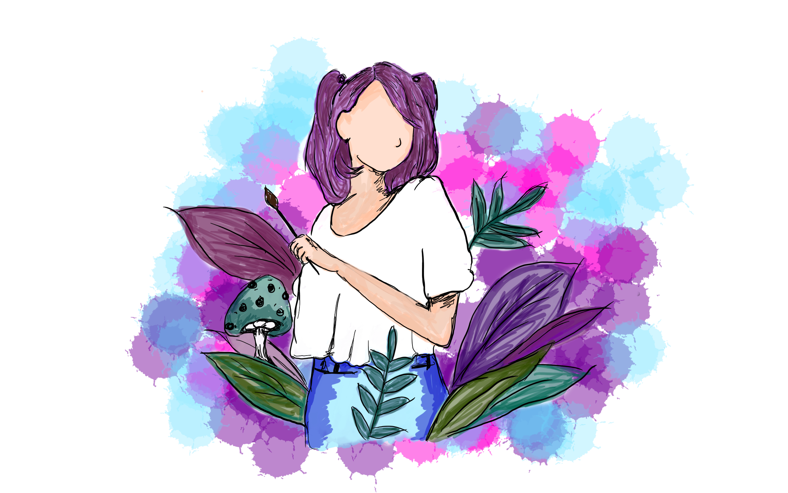

Raquel Lopes
Visual Arts

Design Projects
Welcome! Thank you for your interest in my design projects. To view my current projects, simply click on the image to your side. The collection includes a mix of designs I have worked on over the years, some of which date back several years, as well as my most recent and ongoing projects. My portfolio offers a glimpse into the breadth and depth of my design capabilities. Whether you are a prospective client looking for inspiration, or simply curious about my creative process, I invite you to explore my work and see the passion and dedication I bring to each and every project. Please feel free to reach out to me if you have any questions or would like to discuss a potential design collaboration.
WiT Wed Dev Project
If you are interested in my web development project. Simply click on the image to your side to see the project in action. I had the absolute pleasure of creating this project as part of a course sponsored by PA Women in Tech, an organization that promotes and supports women in technology fields. Through this course, I gained valuable insights and knowledge on web development best practices, user experience design, and coding languages such as HTML, CSS, and JavaScript. This project was a culmination of my learning and demonstrates my ability to create a functional and visually appealing website.
If you have any questions or would like to discuss a potential web development project, please don't hesitate to reach out to me. I'm always excited to take on new challenges!About me
Simply click on the image to your side to read more about my background, experience, and skills. I believe that a strong understanding of who I am as a person and as a professional is essential to building lasting relationships with clients and collaborators. In addition to my bio, you'll also find my contact information and links to my social media profiles. I am always open to new connections and opportunities, so please don't hesitate to reach out to me if you have any questions, comments, or ideas for collaboration.